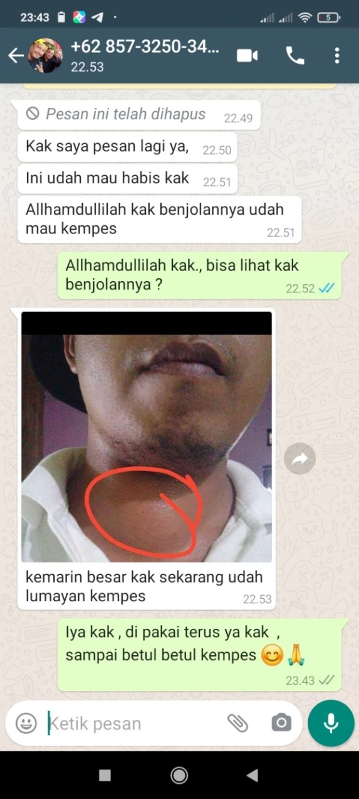

×


Ternyata Minyak Pusaka Yang di pakai bu ida sudah turun-temurun dan dikenal Ampuh oleh masyarakat dayak sebagai pengobatan alternatif
Kamu Punya Keluhan menahun gak perlu capek datang ke kalimantan untuk mendapatkan minyak pusaka ini, Cukup isi form pemesanan di bawah biar kami yg antar sampai di rumah kamu.
SEDIKIT MELURUSKAN !!! Bagi yang salah paham, dan termakan sedikit potongan video yang menyebutkan bahwa ibu ida tidak pernah menjual belikan secara online.
Ramuan Asli Suku Dayak Kalimantan yang sudah menjadi warisan turun temurun dikalimantan, kami sebagai putra daerah sangat bangga bisa membantu seluruh masyarakat indonesia.
Ibu ida Dayak disini hanyalah ikonik sebagai pembuktian betapa dahsyatnya dan Mujarabnya Minyak Enggang Dayak ini.
Kasiat bisa langsung dirasakan
Ingat jangan biarkan sel-sel penyakit anda menggrogoti tubuh anda
Produk kami dijamin keaslianya
Pengiriman cepat dikirim di hari yang sama setelah pesanan masuk
Bisa COD/Bayar ditempat
Penjual terpercaya
Kebersihan terjaga
Produk kualitas terbaik
Produk yg kita jual, 100% ASLI ! Produk yang Asli terdapat Hologram & Segel di kemasannya, kalau tidak asli mana mungkin kami mendapatkan banyak testimoni berhasil dari para custumer , dan sudah banyak beredar video bukti khasiat dari minyak dayak. HATI- HATI PRODUK TIRUAN/PALSU yang beredar dengan harga murah tetapi KANDUNGAN BAHANNYA TIDAK DAPAT DIPERTANGGUNG JAWABKAN
Kesembuhan sejatinya Datangnya hanya dari Allah, Minyak dayak ini hanyalah salah satu perantara dari Ikhtiar kita dalam mencari kesembuhan, Alhamdulillah sudah banyak konsumen kami yang pakai produk kami ini dan mereka merasa puas serta Terbantu dg khasiat dari Minyak Dayak ini, banyak yang merkomendasikan produk kami karena terbukti asli dan bisa langsung di rasakan hasilnya,
BISA, anda bisa bayar di rumah (COD) saat pesanan sampai , langsung ke kurir yang mengantarkan.
Jangan Khawatir! Jika Barang Rusak/Tidak Sampai/Hilang di perjalanan, maka akan kami ganti dengan yang baru, TANPA SYARAT.


Pesan Langsung MInyak Bu Ida